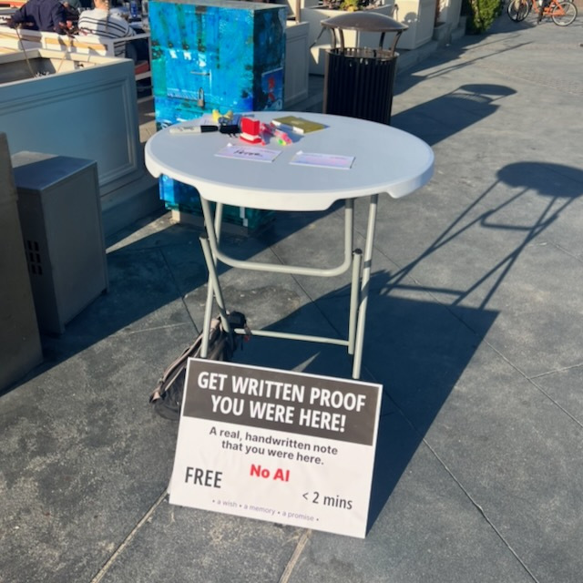
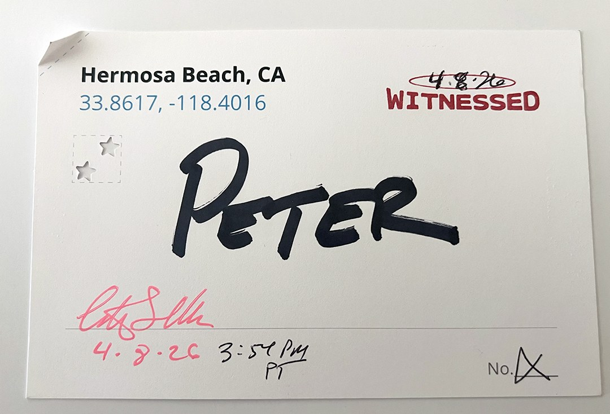

LATEST NEWS
What Happened at the Pier
On Wednesday afternoon I set up a small round table at the end of the Hermosa Beach Pier.
I put a sign on it that said: Get Written Proof You Were Here.
I laid out colored pens. I waited.

The table had no screen. No app. No QR code. Just pens, a stack of pre-printed index cards, a stamp, and a Notarist (me) willing to witness.
For ninety minutes, people stopped. Young people mostly, all kinds, some alone, some in couples, some in groups. I handed each one a card. The card said Hermosa Beach, CA at the top, with the coordinates just below in blue: 33.8617, -118.4016. There was a box for their name. There was a space for my signature and the date and time. There was a red stamp that said WITNESSED.
The instructions were simple. Write your first name. I'll sign it. I'll stamp it. I'll fold it and punch it in a specific way. Then I'll hand it back to you, and no one can refute that you were here, at this place, at this time.
Fifteen people did it. Fifteen cards went home in fifteen pockets.

What surprised me was how quickly most of them understood the point. Several said some version of "we need more of this". One woman said she was going to put hers on the refrigerator. A young man who had clearly been drinking way too much got one too. No filters.
The comment I keep thinking about came from more than one person, unprompted, in different words: Instagram is fake now. You can't trust it anymore. These were not people I had briefed on Notarism. They were strangers on a pier on a Wednesday afternoon. They already knew that the dominant system for documenting presence had stopped working. They said so out loud, to a stranger with a stamp, as if it were obvious.
Maybe it is obvious now. I started calling the process "Analog Instagram".
A witnessed card is not a photograph. It does not capture light or color or expression. It records something narrower and harder to fake: that a specific person was in a specific place at a specific time, and that another human being was present to see it, and committed their signature to that fact.
The card I handed back to each person at the pier is not a memory. It is not a post. It cannot be digitally filtered or retouched or deleted. It has a number on it. It has coordinates. It has a date and a time and a timezone. It has a fold in the corner that was made by hand, in front of them, as part of the act.
It is a physical record.
The pier is still there. The afternoon is gone. But some cards are on some refrigerators, and that is not nothing.